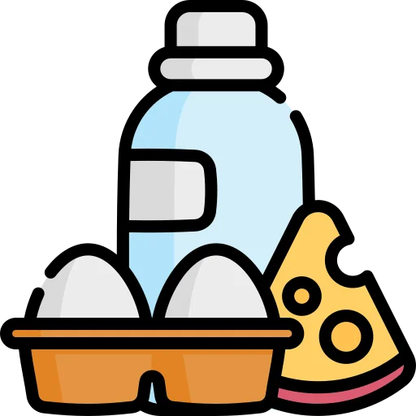
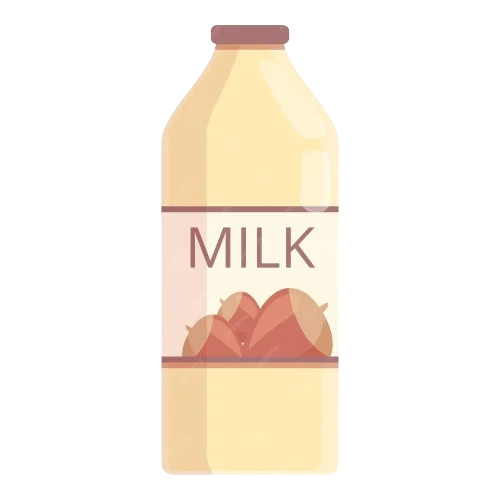

¿SUSTITUIR LOS LÁCTEOS? ES FÁCIL! 
Cada vez hay más productos 100% vegetales a nuestra disposición para sustituir los productos de origen animal! La oferta de alternativas vegetales se expande continuamente, y las encontramos cada vez más fácilmente en supermercados y en tiendas ecológicas o veganas.
Tenemos leches vegetales, natas, margarinas, yogures e incluso quesos vegetales a nuestra disposición para hacer los platos que queramos! Estos productos permiten sustituir fácilmente los lácteos en muchísimas recetas. Selecciona según tu gusto, costumbre y presupuesto.
Su composición nutricional varía y puede ser muy diferente de la de la leche y sus derivados, pero no hay que alertarse: una alimentación vegetal variada nos aportará todo el calcio que nuestro cuerpo necesita!
¿CALCIO SIN PRODUCTOS LÁCTEOS?
No hace falta sufrir, es posible!
El calcio, un nutriente indispensable para el crecimiento y la solidez de los huesos, se asocia a menudo a los productos lácteos. Sin embargo, muchos alimentos de origen vegetal también llevan calcio!
La mayoría de leches y yogures vegetales son enriquecidos con calcio a niveles equivalentes a los de los productos lácteos. El tofu preparado a partir de sales de calcio también es una buena fuente: 100g de tofu cubren aproximadamente el 50% de nuestras necesidades diarias.
Las verduras verdes como las espinacas, el brócoli, el apio o las judías verdes son buenas fuentes de calcio. Los otros alimentos vegetales no son tan ricos en calcio pero sin embargo aportan cantidades apreciables, sobre todo los frutos secos, las naranjas y las legumbres.
Finalmente, algunas aguas cálcicas (Contrex, Rozana...) llevan calcio, a veces hasta 500 mg/L, que se absorbe igual de bien que el de los alimentos!
La Organización Mundial de la Salud estableció ya hace muchos años que hay que consumir un mínimo de 525 mg de calcio cada día independientemente de la alimentación que tengamos: por debajo de este umbral, el riesgo de fractura aumenta.
Bebiendo un vaso de leche de soja enriquecido (200 mL) ya llegamos prácticamente al 50% de esta recomendación diaria: no hay ninguna necesidad de consumir lácteos para tener los huesos sólidos!
Para una buena salud ósea, el calcio debe ir acompañado de una cantidad adecuada de vitamina D. En nuestros países templados, el sol puede satisfacer nuestras necesidades durante el verano. Sin embargo, se recomienda tomar suplementos durante el invierno, seamos veganos o no: la mayoría de la población no llega a los niveles recomendados de vitamina D.
PARA TENER EN EL ARMARIO! 🧺
- Leche vegetal, ideal para sustituir la leche en cualquiera de sus usos. Los gustos varían en función de la marca: inténtalo de diferentes para encontrar tu preferida. Algunas leches llevan azúcar añadido, a veces azúcar de caña o de zumo de fruta, sobre todo aquellas enriquecidas con calcio. Cuidado, la leche vegetal no puede sustituir la leche materna para los bebés en edad de mamar.
- Nates vegetales: soja, arroz, avena, almendra, coco... pruébalas para encontrar tu preferida! La nata de soja es la más multiusos y la más fácil de encontrar en las tiendas y supermercados.
- Margarina o aceite vegetal en lugar de mantequilla.
¿LAS LECHES VEGETALES PUEDEN CUAJAR?
La leche de soja, como la leche animal, cuaja cuando añadimos vinagre o zumo de limón: basta mezclar 200ml de leche de soja con 1 cucharada sopera de zumo de limón o vinagre, hacerla hervir y dejarla reposar unos cuantos minutos. Se puede usar esta preparación para varias recetas, como por ejemplo quesos vegetales.
LECHES VEGETALES PARA TODOS LOS GUSTOS 
La leche de soja, muy extendida en supermercados, es la leche con un sabor más variable en función de la marca. Puede ir bien para cualquier receta. Hay que vigilar de cerca cuando se cuece: puede derramarse, al igual que la leche de vaca!
La leche de arroz tiene una textura bastante líquida y un sabor dulce. Normalmente la encontramos en combinación con frutos secos o con otros cereales: arroz-avellana, arroz-coco, arroz-quinoa, arroz-almendra, etc., lo que añade un poco de untuosidad a su textura.
El sabor gourmet de la leche de almendra o de avellanas va perfecto para hacer postres. Son verdaderas delicias!
Hay muchas otras variedades de leches vegetales, a base de cereales (avena, mijo, espelta, cebada, quinoa) u oleaginosas (castaña, coco, etc.). Cada una tiene sus particularidades. Toca descubrirlas!
Las leches infantiles, o leches maternizadas, son preparaciones concebidas específicamente para las necesidades nutricionales de los bebés. Hay varias versiones vegetales, a base de arroz, de almendra o de soja. Enriquecidas con vitaminas y minerales para cubrir unas necesidades específicas, son equivalentes a las leches infantiles a base de leche de vaca. Del mismo modo que dar leche de vaca no maternizada a un bebé antes de un año de vida sería peligroso para su salud, las leches vegetales no infantiles tampoco están adaptadas.
Para saber más sobre la alimentación vegana de los bebés:
NATAS VEGETALES Y BECHAMEL
Algunas preparaciones semejantes a la nata líquida existen en forma de pequeños tetrabrics. En función del tipo y de la marca, pueden ser más o menos dulces y espesas y con un sabor más o menos fuerte. Nata de soja, de coco, de avena, de espelta, de arroz, de almendra... descúbrelas en tu supermercado o tienda ecológica o vegana.
La soja lactofermentada (no requiere ningún producto lácteo) o el tofu sedoso triturado pueden servir como equivalente a la nata.
En cuanto a la bechamel, algunas marcas ofrecen una preparación vegana que se puede usar para cocer al horno. La bechamel casera a partir de leche de soja también es muy fácil de hacer.
Las cremas de frutos secos (almendra, avellana, anacardo, sésamo) son perfectas para untar pan y dan un resultado cremoso al usarlas para cocinar: aportan sabor y untuosidad a las sopas, salsas, purés de patatas y guarniciones de pasteles.
ALTERNATIVAS A LA MANTEQUILLA
Las margarinas, algunas de las cuales son veganas, representan la alternativa más simple para la pastelería. En función de la receta se puede usar otras grasas, tales como aceites o cremas de frutos secos. Es preferible usar aceites que soporten la cocción y que tengan un sabor neutro: aceites de cacahuete, de girasol o incluso de oliva en algunas recetas.
Las cremas de frutos secos también son verdaderas mantequillas vegetales, deliciosas para untar!
YOGURES Y CREMAS DE POSTRES
Podemos encontrar yogures y cremas de postre a base de soja, de arroz o de cáñamo tanto en grandes superficies como en tiendas ecológicas. Hay yogures naturales, de frutas, de chocolate, de vainilla, de pistacho, de café, etc. La leche de soja también puede servir como base para hacer yogures caseros.
LA NATA MONTADA A PUNTO!
Podemos comprar nata montada ya preparada en tiendas veganas y en la mayoría de tiendas casher. Para obtener los mejores resultados, al igual que con la receta tradicional de nata montada, tenemos que refrigerar el bol y la nata antes de batir la preparación con un agitadores durante al menos 5 minutos. También podemos batir la leche espesa de coco (la parte más densa que encontramos en la parte de arriba cuando dejamos la leche de coco en la nevera y queda separada en dos partes) tal como la encontramos.

QUESOS SIN CRUELDAD
Las tiendas especializadas (veganas o ecológicas) ofrecen productos que se parecen a diferentes tipos de queso. Algunos, como los que se parecen a quesos frescos para untar o quesos duros (en láminas), comienzan a estar disponibles en los supermercados.
La levadura nutricional es una buena alternativa al queso rallado o en polvo. En las salsas, gratinados, pastas y patés vegetales, puede sustituir sin problemas el sabor a queso. Su sabor puede variar en función de la marca: no dudes en probar unos cuantos para encontrar tu favorito!
El tofu lactofermentado, muy sabroso, tiene una textura parecida al hecho. Podemos comerlo directamente o usarlo para cocinar (especiado y transformado en paté para untar, en cubos marinados...). Lo podemos encontrar en tiendas especializadas.
Finalmente, cada vez más libros de cocina vegana proponen recetas de quesos vegetales a base de anacardos, de almendras o de tofu. Internet, donde podrás encontrar diferentes recetas y críticas, sigue siendo una fuente privilegiada de inspiración para los cocineros.
*Basado en contenido original de L214